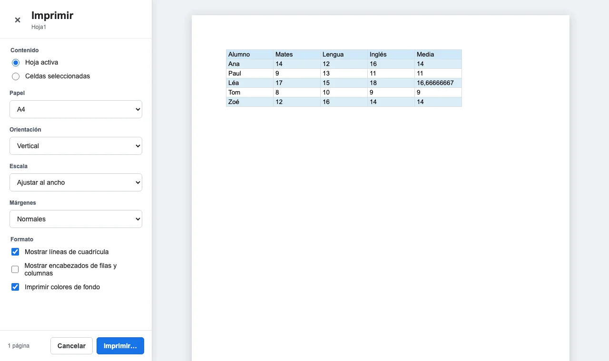

Imprimir
Archivo › Imprimir… o Ctrl P muestra las páginas tal como se imprimirán.

| Ajuste | Opciones |
|---|---|
| Contenido | la hoja activa, o las celdas seleccionadas antes de abrir la ventana |
| Papel | A4, Letter |
| Orientación | vertical, horizontal |
| Escala | Tamaño real; Ajustar al ancho: todas las columnas en el ancho de una página; Ajustar a una página |
| Márgenes | normales, estrechos, amplios |
| Formato | cuadrícula, encabezados de filas y columnas, colores de fondo |
Imprimir… abre la ventana del navegador, donde se elige la impresora o guardar en PDF.
- Solo se imprimen las celdas, con su formato: ni gráficos, ni imágenes, ni minigráficos.
- Las filas y columnas ocultas no se imprimen.
- Una casilla se imprime como TRUE o FALSE.
- Se imprime una hoja cada vez.
Para imprimir con los gráficos, guardar el libro y abrirlo en Excel o LibreOffice.